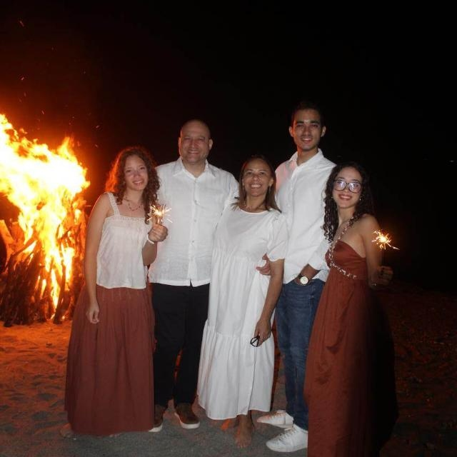

Alejandro Vanderhorst

Ever since I was young, I’ve been passionate about technology and creativity. My journey into programming began with curiosity and grew into a deep dedication to coding and digital innovation. I have studied programming independently, constantly seeking out new challenges and expanding my skills. One of my early achievements was participating in LEGO robotics competitions, where I combined engineering, coding, and problem-solving in a fun and competitive environment. That experience fueled my interest in more advanced projects, eventually leading me to earn a certificate in Virtual Reality development using Unity — a milestone that strengthened my skills in immersive digital experiences. My true passion lies in creating video games. I love building worlds, designing mechanics, and writing the code that brings it all to life. Whether working on prototypes or polished titles, I find joy in every step of the game development process. In addition to my work in tech, I’m also a music composer. I enjoy blending sound and emotion, often using music to enhance the stories I tell through games or as a standalone creative outlet. Driven by curiosity, creativity, and a love for learning, I continue to grow as a programmer, game developer, and artist.